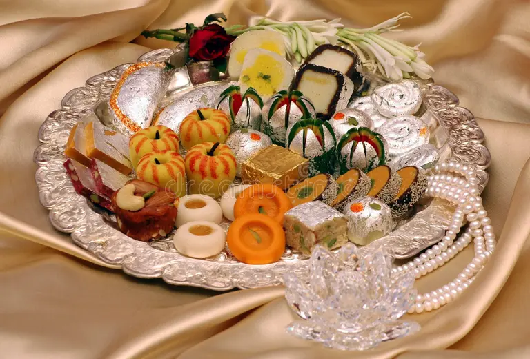
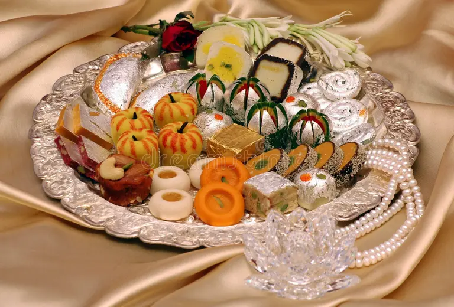

Diwali Countdown 2025
Days
Hours
Minutes
Seconds
A Message of Joy
May the divine light of Diwali spread into your life with peace, prosperity, happiness, and good health. Wishing you and your family a very happy and prosperous Diwali!
Festival Moments
 



A Special Wish from Our College
SHANTINIKETAN GROUP OF INSTITUTIONS
On this auspicious occasion of Diwali, we extend our warmest wishes to all our students, faculty, and staff. May this festival bring enlightenment, wisdom, and success in all your endeavors.
Let's celebrate the triumph of light over darkness and knowledge over ignorance.
Explore Our CollegeThe Five Days of Diwali
Day 1: Dhanteras
The festival begins with Dhanteras, a day for celebrating wealth. (Click to read more)
Day 2: Naraka Chaturdashi
Symbolizing the triumph of good over evil. (Click to read more)
Day 3: Lakshmi Puja
The main day of Diwali, dedicated to Goddess Lakshmi. (Click to read more)
Day 4: Govardhan Puja
Commemorating Lord Krishna's feat of lifting Govardhan Hill. (Click to read more)
Day 5: Bhai Dooj
A celebration of the beautiful bond between brothers and sisters. (Click to read more)
Sweet Delights of Diwali
Besan Ladoo
A timeless classic made from roasted gram flour. (Click to read more)
Gulab Jamun
Soft, spongy milk-solid balls soaked in sweet syrup. (Click to read more)
Kaju Katli
A luxurious, diamond-shaped sweet made from cashews. (Click to read more)
Celebrate Safely!
- Always light firecrackers in open spaces, away from homes and vehicles.
- Wear cotton clothes instead of synthetic ones, as they do not catch fire easily.
- Keep a bucket of water and sand handy for any emergencies.
- Never leave diyas or candles unattended, especially near curtains or flammable items.
- Ensure that children are always supervised by an adult when handling fireworks.